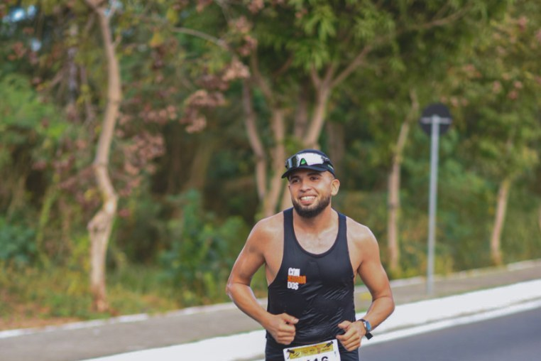
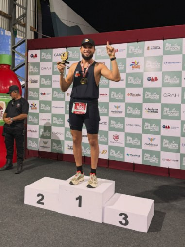
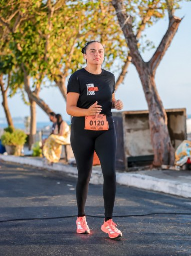
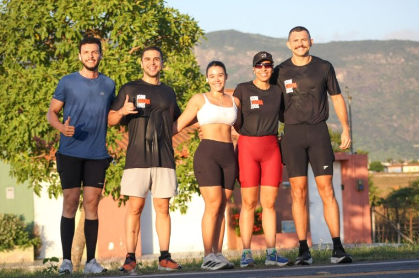
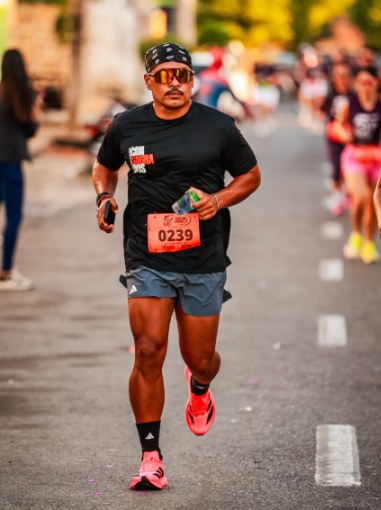
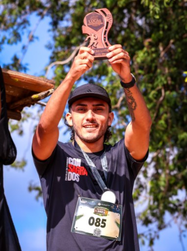
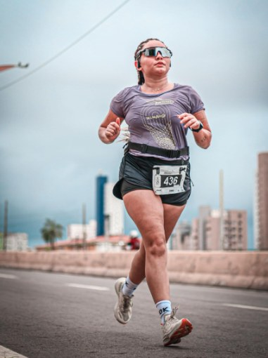
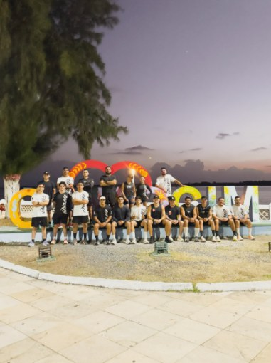
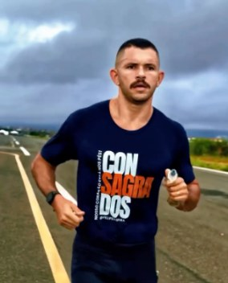
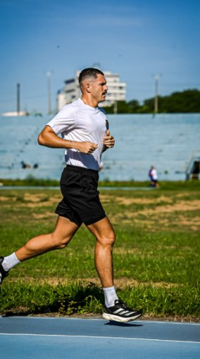

Nº 0001 · você
Pessoas comuns. Consagradas.
Assessoria de corrida 100% online, do primeiro trote aos 42 km. Treino feito pra sua rotina, suporte de verdade e um time inteiro correndo do seu lado. Aqui você não corre sozinho.
- +40alunos ativos
- 100%online
- 0 → 42km, no seu ritmo

treino de aluno · direto do app
Pra quem é
Você não precisa ser rápido. Só precisa começar.
A maioria desiste no meio do caminho por falta de direção, de constância e de alguém pra orientar. A gente resolve isso com você.
- 01Quer começar e não sabe como
Nunca correu, ou tentou e parou. A gente te acompanha desde o zero, no seu ritmo.
- 02Já corre, mas não evolui
Treina, se esforça e o pace não sai do lugar. Falta método, não vontade.
- 03Vive se lesionando
Volume errado, pressa, zero descanso. Treino bem planejado também é prevenção.
Como funciona
Treino com método, orientação e propósito.
-
1ª volta
A conversa
Você chama a gente no WhatsApp. Entendemos seu objetivo, sua rotina, seu histórico e onde você quer chegar.
-
2ª volta
O plano
Seus treinos são montados pra você, não copiados de ninguém. Respeitando fase, tempo disponível e condicionamento.
-
3ª volta
O acompanhamento
Suporte de verdade: dúvida respondida, treino ajustado, olho no seu pace e na sua recuperação.
-
Reta final
A linha de chegada
5K, 10K, meia ou maratona. A prova é consequência de um processo bem feito.
Do iniciante ao maratonista
Maratona é processo.
É respeitar cada fase, construir base e evoluir aos poucos. Veja o percurso que a gente faz junto.
O primeiro passo
Caminhada e trote alternados. O objetivo aqui é criar o hábito, não o recorde.
A primeira prova
Correr 5 km sem parar. Pra muita gente, a primeira medalha muda tudo.
Ritmo e cadência
Entra o trabalho de pace, cadência e fortalecimento. O corpo aguenta mais, e melhor.
A meia
Longões de fim de semana, estratégia de prova, hidratação e gel na hora certa.
Consagrado
Semanas de preparação, alinhamento até com a família. E aquela chegada que ninguém esquece.
O time
Gente comum, resultado de gente grande.
Alunos em prova, no pódio e nos treinões. Cada foto aqui tem um processo por trás.









Quem puxa o pelotão
Felipe, fundador e treinador.
A Consagrados nasceu da vontade de estar perto das pessoas mesmo à distância. Felipe treina, corre junto e sabe o que é cruzar os 42 km: completou a própria maratona e conhece de perto cada dificuldade do caminho.
“No fim, o que importa é ter um objetivo e alguém caminhando com você.”@felipeinspira
Novo
Plano Semestral
Você não precisa correr mais. Precisa correr melhor.
Um formato pra quem quer sair do improviso e entrar num processo de evolução real. Seis meses de treino com método, sem começar do zero a cada mês.
- Treinos personalizados, ajustados ao longo do semestre
- Suporte direto com a equipe pelo WhatsApp
- Planejamento pensado para a sua prova-alvo
- Pagamento facilitado e condições especiais
Dúvidas
Antes da largada.
Ficou alguma pergunta? Chama no WhatsApp que a gente responde.
Nunca corri. Posso entrar?
Pode e deve. A assessoria atende do iniciante ao maratonista. O treino começa exatamente de onde você está hoje.
Como funciona uma assessoria online?
Você recebe treinos personalizados e acompanhamento a distância. Treina no seu horário, no seu bairro, e tem a equipe por perto pra ajustar o que for preciso.
Atendem fora do Ceará?
Sim. Temos alunos em todo o Brasil e também no exterior.
Tem treino presencial?
Sim, fazemos treinões e encontros presenciais, como em Fortaleza e no interior do Ceará. Pergunte no WhatsApp sobre os próximos.
Quanto custa?
Temos planos acessíveis, pagamento facilitado e condições especiais, inclusive o Plano Semestral. Os valores são passados no WhatsApp.
Entre para o time
Vem ser um Consagrado.
Preenche aqui que a mensagem já sai pronta no WhatsApp. Você escolhe com quem falar.